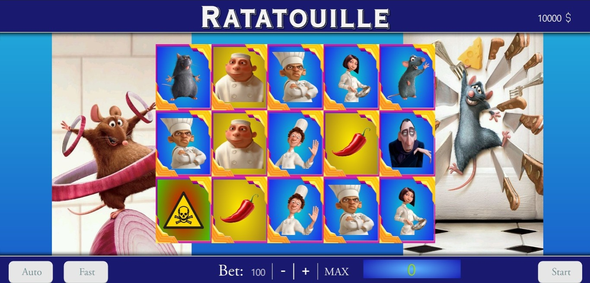

Ratatouille, a combination game
O projeto implementa um jogo de combinações baseado em probabilidades, possuindo funcionalidades de jogar automaticamente ou mais rapidamente,calcular, gerenciar e armazenar ganhos. O tema do jogo é o filme da Disney ratatouille de 2007.
"Boa culinária não é para os fracos de coração. É para as mentes criativas! Corações fortes! As coisas podem até dar errado, mas não deve deixar ninguém definir seus limites a partir de sua origem. O único limite é sua alma." -Auguste Guseau
Summary
1 ………………………………………………..Introdução2 ………………………………………………..Requisitos
3 ………………………………………………..Instalação
4 ………..…………………..………………….Arquitetura
5 ……………………………....…………Funcionalidades
6 ………………………………….....…Introdução ao uso

Introdução
1.1 Trabalho
No início do segundo semestre de 2024, nós, estudantes do ensino técnico integrado ao Ensino Médio do Instituto Federal de São Paulo, recebemos a tarefa de desenvolver um jogo com tema livre, deste que não houvesse temas polêmiocos ou violentos, o qual valeria como parte na média nas matérias de:
Lógica de Programação (lógica do jogo);
Princípios de desenvolvimento web (site para download do jogo);
informática (slide, para apresentar o jogo à banca).
O jogo será avaliado por uma banca de Professores que levarão em conta a interface, lógica, ideia, música e outros itens solicitados
1.2 Idéia
A alta dos caça níqueis no Brasil, tem causado polêmica, tanto em relação a atual lei, a qual é falha, e ao mau hábito das pessoas em gerenciar seu dinheiro, como uma maneira de aliviar essa vontade das pessoas, a ideia do jogo surgiu. Em relação ao tema (filme ratatouille 2007) do jogo, uma crítica ao mercenários jogos gerenciados pelas grandes empresas, que usam animais como representante da marca
1.3 Objetivo
Além de servir como uma atividade de ensino, o jogo se provou como uma atividade recreativa, servindo como pontapé para futuros projetos de larga escala. Tendo em vista atender aqueles que possuem algum vício com jogos ou queira apenas se divertir com nosso jogo.
2 Requisitos
2.1 Plataformas
Disponível para computador com Sistema Operacional Windows 7, 10 ou 11, em um arquivo .exe instalado, Linux (Debian / Fedora / Arch Linux / SUSE), em um arquivo .ELF .Para acesso por celular ou outra plataforma, é possível também acessar a versão Web do jogo, disponibilizada na nuvem para que qualquer um acesse
2.2 Incompatibilidade
Algumas versões de dispositivos móveis e sistemas operacionais podem não funcionar corretamente. A ausência de atualizações para esses dispositivos e sistemas pode resultar na falta de suporte para os recursos utilizados.
3 Instalação
3.1 Felgo Engine ( Windows/Linux )
Acesse o site:https://felgo.com/download, crie uma conta ou entre em sua conta, clique no botão laranja escrito: “Download for Windows”. Após a instalação do Felgo, acesse o Felgo IDE - Qt Creator, vá até o Edit, localizado um pouco baixo do canto superior esquerdo, pressione ctrl+shift+o e vá até a pasta onde se localiza o jogo. Após isso, clique no CMakeList.txt, a partir de então, o Felgo compilará e iniciará o jogo automaticamente.
3.2 Build ( Win / Linux )
dentro da pasta ./build …
3.3 Link ( Web )
Por conta das diferenças nos Sistemas de arquivo Web, Linux e Windows, o código dos 2 possuem diferenças, então para acessar o código é necessário trocar para branch Web, e para jogar sem baixar nada, basta entrar no link …/deploy/
4 Arquitetura
4.1 Construção
A estrutura do jogo é feita por meio de classes, para que fosse mais simples e abstrato a criação do jogo, o arquivo /qml/Main.qml gerencia tudo que acontece, entretanto a lógica principal do Caça Níquel está na pasta /qml/slotMachine utilizar esse modelo de construção facilita a organização e gerenciamento da produção do jogo. Durante esse processo tentamos utilizar o máximo da arquitetura CleanCode, entretanto afirmar que deu certo é impossível.
5 Funcionalidades
5.1 Slot machine
Cada retângulo visível na caça-níqueis é nomeado de carta, estas possuem atributos como o nome da carta, frequência desta na caça-níqueis por coluna, o multiplicador de vitória, uma lista de combinações possíveis, a imagem dela e se ela é especial ou não, sendo declarados no arquivo / qml/config/SymbolRats.qml. Por padrão, todas as cartas não especiais podem combinar com aquelas que são idênticas a ela. Cartas possuem fundo gradiente azul, caso sejam não especiais, ou gradiente amarelo, caso sejam especiais, ou gradiente vermelho-verde, caso seja do tipo veneno.
Para que o jogador ganhe o prêmio, é necessário que haja uma combinação de cartas entre as linhas de vitória existentes, as quais estão definidas no diretório /qml/slotMachine/WinAnalysis.qml, com cada uma possuindo a sua própria imagem, posição na matriz, prêmio, multiplicador de vitória e a função check, declarada implicitamente no arquivo /qml/slotMachine/WinningLine.qml, que verifica se as posições correspondentes das linhas estão de acordo com as regras do jogo.
Seque-se abaixa as linhas de vitórias possíveis:
Em caso de prêmios superior a 5X o valor apostado, Big Win, ou a existência de uma sequência com somente cartas não especiais, pop-ups serão exibidos contendo informação do prêmio total ou de quantos spins grátis foram adquiridos. Em caso de haver dois pop-ups para serem exibidos, O Big Win irá se sobrepor sobre os demais pop-ups.
5.2 Sounds
Todos os Sons e músicas do jogo estão presentes na pasta /assets/Sounds/ . Dentre as músicas presentes, todas são do jogo Ratatouille de 2007, e são variações das músicas do filme, os efeitos sonoros foram baixados em sites, os quais disponibilizam efeitos sonoros sem direitos autorais
6 Introdução ao uso
Uma linha de vitória é válida quando possui mais de três cartas realizando a combinação, entre as quais podem ser não especiais ou especiais.
Caso haja uma carta especial, esta servirá como uma conexão entre as cartas a frente e atrás desta, caso a próxima carta no sentido da linha não seja igual a carta especial e não seja especial. A carta a frente da carta especial deverá conter as mesmas conexões possíveis da carta anterior ou conter o nome dela dentro das conexões possíveis. Para futuras situações na mesma linha de vitória, somente as cartas de acordo com as condicionais acima, se baseando na primeira carta não especial, serão escolhidas.
Caso seja em uma combinação haja uma sequência de três ou mais cartas não especiais sem nenhuma carta especial, o jogador terá direito a dez giros de caça-níqueis grátis.
Se a linha se provar vencedora com base nas condicionais acima, o valor apostado será multiplicado pelo fator de vitória da primeira carta não especial e o resultado será multiplicado pelo produto de todos os fatores de vitória das cartas especiais caso haja, ao menos, uma carta especial na linha da vitória. Conforme mais cartas não especiais fizerem parte da combinação, o fator de vitória destas cartas será maior, o mesmo vale para as cartas especiais
Em caso de vitória, é necessários realizar uma nova aposta para sacar o dinheiro, também não pode ser sacado enquanto houver spins grátis
Segue abaixo uma tabela de combinações possíveis para melhor entendimento dos usuários:
| Carta | Combinações | 1 Carta | 2 Cartas | 3 Cartas | 4 Cartas | 5 Cartas | Frequência |
|---|---|---|---|---|---|---|---|
| Remy | ["Linguini", "Kitchen", "Auguste"] | 10X | 20X | 30X | 50X | 100X | 1 |
| Auguste | ["Universal", "Kitchen"] | 4X | 5X | 10X | 20X | 30X | 1 |
| Colette | ["Kitchen", "Linguine", "Human"] | 1X | 2X | 4X | 15X | 20X | 2 |
| Egon | ["Universal"] | 1X | 2X | 2X | 10X | 17X | 3 |
| ChefHat | ["Human", "Remy", "Auguste"] | 1X | 5X | 5X | 10X | 15X | 3 |
| Linguini | ["Remy", "Colette", "Auguste", "Food"] | 1X | 2X | 4X | 9X | 15X | 3 |
| Logo | ["Universal"] | 1X | 1X | 2X | 9X | 17X | 3 |
| Django | ["Food"] | 1X | 1X | 4X | 7X | 10X | 4 |
| Emile | ["Food"] | 1X | 2X | 4X | 7X | 10X | 4 |
| Skinner | [ ] | 1X | 1X | 2X | 6X | 10X | 5 |
| Poison | ["Poison"] | 0X | 0X | 0X | 0X | 0X | 5 |
| Horst | ["Human", "Universal"] | 2X | 2X | 4X | 2X | 2X | 2 |
| Larousse | ["Human", "Universal"] | 2X | 2X | 4X | 2X | 2X | 2 |
| Seasoning | ["Food", "Universal"] | 2X | 2X | 5X | 2X | 2X | 1 |
| Donut | ["Food", "Universal"] | 2X | 2X | 5X | 2X | 2X | 1 |
| WoodenSpoon | ["Kitchen"] | 5X | 10X | 15X | 5X | 10X | 1 |
*Nota: Caso analíse o código bruto do aquivo ./qml/config/SymbolRats, o nome Auguste não está presente, e sim o nome Gusteau.
Exemplos de vitória

Neste exemplo, o prêmio foi superior a 5x o valor apostado, portanto a tela contendo a imagem do Big Win aparece, exibindo o prêmio total. Em casos específicos, quando há a presença do pop-up dos FreeSpins, esta tela sobrepõe os demais pop-ups. Para fechar este pop-up, clique na tela, exceto no título Ratatouille e na barra inferior

Neste exemplo, por conta de haver uma combinação de mais de duas cartas não especiais, o jogador adquiriu dez spins grátis. Para sair desta tela, clique em qualquer local da tela